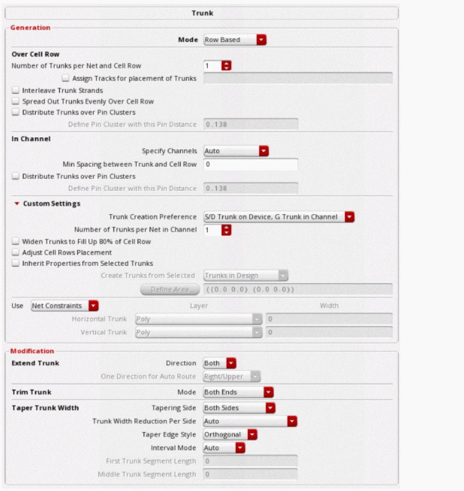
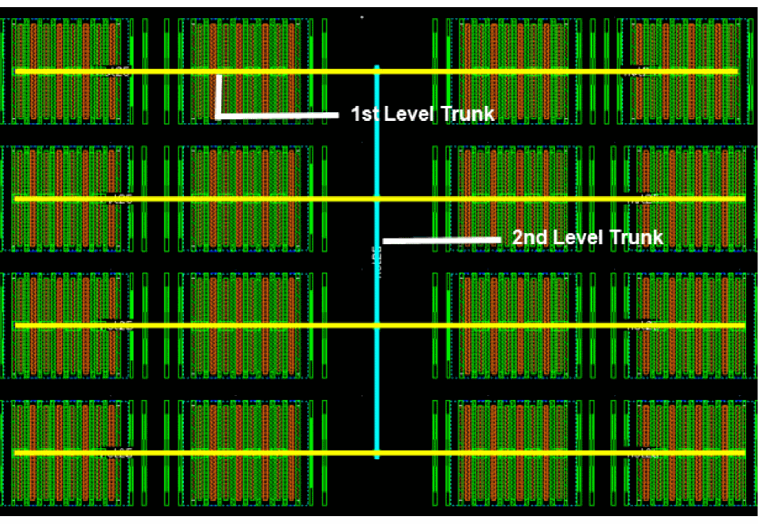

11
Working with Assisted and Automated Structured Routing (ICADVM20.1 EXL Only)
The first step towards assisted and automated structured routing is more automation and less GUI options to be specified for routing the design.
For automated structured routing, you can use one of the following features.
- Using Automatic Trunk Generation in Pin to Trunk Route Flow
- Using Trunk Mesh Routing in the Pin to Trunk Route Flow
- Using Tree Routing
Using Automatic Trunk Generation in Pin to Trunk Route Flow
The following steps show you how to use automatic trunk generation in the Pin to Trunk routing flow.
- Open a design in the layout window.
- In the Navigator Assistant, select net25. The instance pins on the selected net are highlighted.
- Select the design style as Auto from the Design Style drop-down list.
- Select the routing flow as Pin to Trunk from the Route Flow drop-down list.
- Ensure that the Generate Trunks option is selected in the Routing Steps group box.
-
Click Selected in the Route Net.
The following figure shows the trunks that are generated for the routed net. You can see that there are no vias connecting the trunks to the pins. This is because the Route Twigs step is deselected.
- Now, delete the routing on the selected net by clicking the Undo button on the Edit toolbar.
- Again, perform step 2 to step 5.
- Now, select the Route Twigs option in the Routing Steps group box.
-
Click Selected in the Route Net.
The following figure shows the trunks that are generated for the routed net. Observe that now there are vias connecting the trunks to the pins. This is because the Route Twigs step is selected.
- In the Wire Assistant, click the Options button next to Route Flow. This displays the Virtuoso Space-based Router Options form.
-
To view the trunk generation options, click the Trunk option below Pin to Trunk.
 -
Specify the options in the Over Cell Row section and see how the generated trunks are changed according to each option. For more information, see, Specifying Over Cell Row Options.
-
Specify the In Channel options for gate pins. For more information, see Specifying In Channel Options.
- If you want to customize the settings for the selected net, click Custom Settings. and specify the options. For more information, see Specifying Custom Settings.
- Click Close.
-
Click Selected in the Route Net.
The following figure shows the routing result when few of the over cell row options for source and drains pins have been specified in the Trunk subform.
For a short demonstration on how to use the new trunk generation feature, see Automatic Trunk Generation using Pin To Trunk (P2T) Route Flow in Wire Assistant.
Related Topics
Specifying Trunk Generation Options (ICADVM18.1 EXL Only)
Using Trunk Mesh Routing in the Pin to Trunk Route Flow
The following steps show how to use trunk mesh routing using the Pin to Trunk routing flow.
- Open a design in the layout window.
- In the Navigator Assistant, select net25. The instance pins on the selected net are highlighted.
- Select the design style as Automatic from the Design Style drop-down list.
- Select the routing flow as Pin to Trunk from the Route Flow drop-down list.
- Ensure that Generate Trunks and Route Twigs options are selected in the Routing Steps group box.
-
To generate trunks and route the twigs for the selected net, click Selected in Route Net.
You can view the generated trunks. Observe that there are vias connecting the trunks to the pins. This is because the Route Twigs step is selected. The following figure displays the routed net. However, the trunks are not connected to one another.
- To connect the trunks, select Trunk to Trunk routing step. Ensure that the mode is selected as All Trunks.
-
Click Selected in Route Net.
Observe that only one vertical trunk was created to connect all of the horizontal trunks together. However, this is not enough to handle electromigration rules for a net with high current.
To connect the trunks using multiple trunks, you can use Trunk Mesh routing. - Delete the previous routing on the selected net by clicking the Undo button on the Edit toolbar.
- In the Trunk to Trunk routing step, select the routing mode as Trunk Mesh Routing from the Mode drop-down list.
-
Click the ellipses button next to the Mode field.
The Trunk Mesh Routing Configuration form displays.
-
Select the check box next to
M2metal layer in the Use column and click Close. -
Click Selected in Route Net.
The following figure displays the routed result.
For a short demonstration on how to use the new trunk to trunk mesh routing feature, see Trunk To Trunk Mesh Routing using Pin To Trunk (P2T) Route Flow.
Related Topics
Trunk Mesh Routing (ICADVNM18.1 Only)
Trunk Mesh Routing Configuration Form (ICADVM18.1 EXL Only)
Using Tree Routing
- Open a design in the layout window.
- In the Navigator Assistant, select net25. The instance pins on the selected net are highlighted.
- In the Wire Assistant, select the design style as Automatic from the Design Style drop-down list.
- Select Tree Route as the routing flow from the Route Flow drop-down list. The Routing Steps for Tree Route flow displays, as shown in the following figure.
- Ensure that Generate Trunks is selected in the Routing Steps group box.
- Select No Mesh from the Generate Trunks drop-down list.
-
Click Selected in the Route Net.
The following figure shows the routing results for the selected net when No Mesh is selected.
Similarly, you can select the Auto Mesh option to automatically generate trunks for mesh routing.
- In the Navigator Assistant, right-click the selected net.
-
In the context-sensitive menu, click Highlight Trunks. The routed trunks are highlighted in different colors. The level-1 trunks are highlighted in Yellow and the level-2 trunk is highlighted in Cyan.
The following figure shows the highlighted trunks for auto mesh.
- Now, delete the routing on the selected net by clicking the Undo button on the Edit toolbar.
- In the Wire Assistant, select Auto Mesh from the Generate Trunks drop-down list.
- Click All in the Route Net.
-
Highlight the trunks and observe the routed results.
Related Topics
Using the Tree Route Flow (ICADVM20.1 EXL Only)
Performing Area-based Tree Routing
For area-based routing, use the Select Area and Route command to perform Tree routing in a specified area.
- Open a design in the layout window.
- In the Navigator Assistant, click net25 to select the net. The instance pins on the selected net are highlighted.
- In the Wire Assistant, select the design style as Automatic from the Design Style drop-down list.
- Select Tree Route as the routing flow from the Route Flow drop-down list.
- Ensure that Generate Trunks is selected in the Routing Steps group box.
- Select No Mesh from the Generate Trunks drop-down list.
- In the Navigator Assistant, right-click the selected net.
- From the context-sensitive menu, click the Select Area and Route with Wire Assistant Overrrides option.
-
With
net25still selected in the Navigator assistant, use the mouse to select two points to digitize a box around the area of thenet25pins.
The following figure shows the result for the routed area. Only the area that was selected is routed.
The following figure shows the result for the route area when Auto Mesh is selected.
Return to top